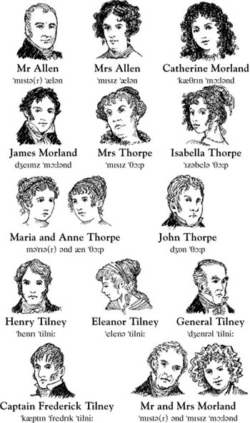

Northanger Abbey
Jane Austen
trang trước
trang sau
Listen to Part 1:
Your browser does not support the audio element.
Nhân vật trong Câu chuyện

Mục lục
Trang bìa
Trang bản quyền
Mục lục
Ghi chú về tác giả
Ghi chú về câu chuyện này
Nhân vật trong câu chuyện
1 Catherine đến Bath
2 Những người bạn mới của Catherine
3 John và James
4 Một buổi dạ hội ở Upper Room
5 'Tại sao anh lại nói dối tôi?'
6 Catherine và gia đình Tilney
7 Isabella đang yêu
8 Đội trưởng Frederick Tilney
9 Isabella và James
10 Tu viện Northanger
11 'Cô Morland thân mến của tôi!'
12 Thăm Woodston
13 Thư của Isabella
14 Catherine về nhà
15 'Cô sẽ lấy anh chứ?'
previous page
start
next page